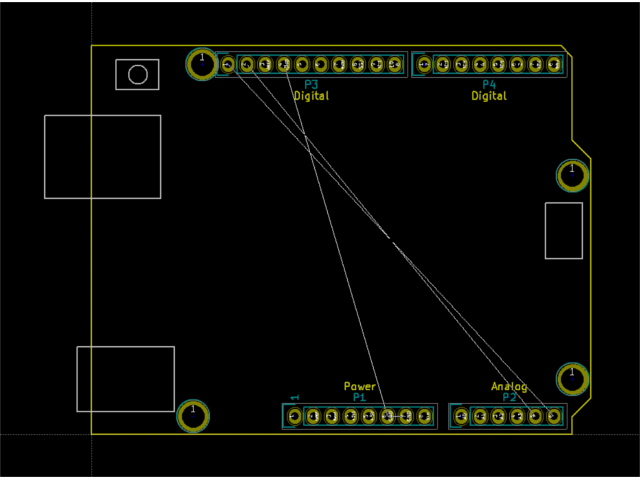

This project template is the basis of an expansion board for the
Arduino as Uno
For example Arduino Leonardo, Arduino Tre ect...
This base project includes a PCB edge defined as the same
size as the Arduino uno Rev3 PCB with the connectors placed
correctly to align the two boards.
Contours and holes can be easely modified, just remove line or hole
and redraw wath you want in layer "edge.cuts".
In layer "Dwgs.User" you have the position of Reset button,
USB, ISP and Power connector,
The final PCB looks like the following:

(c)2015 Jonathan Iapicco.